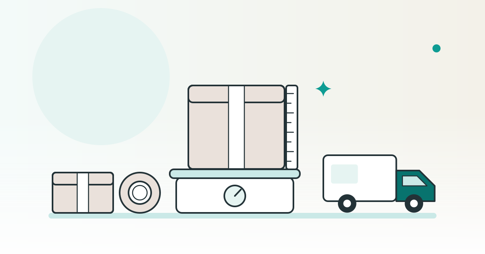

SHOPKIT コラム
ネットショップの送料の決め方発送方法・梱包と先に伝えること

ネットショップの送料は、梱包した荷物の発送費と資材費を出し、購入者にどう負担してもらうかを決めます。全国一律・地域別・一定の購入額以上で無料にする方法を比べ、送料と届く時期を注文前に伝えられる状態に整えます。
この記事は、完成品のネットショップを販売している SHOPKIT が書いています。
この記事で分かること
- 送料の決め方の違いと、設定する前に出す支出
- 発送方法・梱包資材と、お店に載せる案内のそろえ方
- 同封する書類と、発送を外に頼むときの整理項目
送料の決め方は、発送費と梱包費を書き出すところから
運送会社へ払う金額と、お客様から受け取る送料は分けて考えます。最初に、商品を包んだ状態の運賃、箱や袋などの資材費、発送を外に頼む場合の作業費を並べます。運送会社や委託先の最新の料金表に、自分の商品の大きさ・重さ・届け先を当てはめて出す方法です。
そのうえで、お店の表示を次のように選びます。下の表は選ぶための一般的な整理で、金額の相場や推奨額を示すものではありません。
| 決め方 | 使いどころ | 先に決めること |
|---|---|---|
| 全国一律 | 購入者に同じ金額を案内したい場合。送料の説明をそろえやすい。 | 届け先による実際の運賃の差を、お店側でどう負担するか。例外の地域を設けるなら範囲と追加額。 |
| 地域ごと | 届け先による運賃の差を、受け取る送料に反映したい場合。 | 地域の区切りと金額。都道府県で区切るだけでは足りない地域や、追加の扱い。 |
| 一定の購入額以上で無料 | 購入額を条件に、お客様の送料負担をなくす場合。 | 値引きの前後のどちらで判定するか。対象外の商品・地域、まとめ買いで荷物が大きくなる場合。 |
送料無料にしても、荷物を送る支出は残ります。商品代金も含めた支出の整理と合わせて決めます。例えば、小さな商品を複数購入すると袋から箱へ変わるなら、単品の発送費だけを基準にしないことが大切です。
関連：ネットショップの価格の決め方｜原価・送料・手数料と税込の表示
送料と届く時期は、購入前の画面にそろえて載せる
通信販売の広告では、商品の価格に加え、送料や商品の引渡時期も表示項目に含まれます。消費者庁の案内では、価格・送料以外に購入者が負担する費用がある場合、その内容と金額も挙げています。出典：消費者庁「通信販売」広告の表示。
また、インターネット通販の注文を確定する直前の画面でも、送料を含む価格や引渡時期などの表示が求められると説明されています。商品ページに書く案内と、注文画面の設定を別々にせず、同じ条件にそろえます。出典：同「特定申込みを受ける際の表示」。
- 送料：地域ごとの金額、追加の負担がある地域、送料無料の条件を同じ案内にまとめる。
- 届く時期：発送する時期とお届けまでの見通しを分け、実際の手配に合わせて書く。予約商品や取り寄せる商品は通常の商品と分ける。
- 複数商品の注文：まとめて送るか、分けて送るかと、それぞれの送料の扱いを決める。
表示の準備では、お客様と同じ順に商品ページから注文直前の画面まで進む方法が役立ちます。送料が変わる地域や、無料の条件に届く場合・届かない場合で、案内と計算結果を照らします。個別の表示の適否は、消費者庁の案内や窓口で判断を求める範囲です。
発送方法は、梱包後の大きさ・重さと追跡・補償で選ぶ
商品の寸法だけで決めず、実際に包んでから発送方法を比べます。箱や緩衝材を足すと外寸と重さが変わります。複数購入されたときの包み方も用意すると、受け取る送料と実際の支出のずれを見つけやすくなります。
| 比較する項目 | 手元で用意するもの | 運送会社の案内で見る所 |
|---|---|---|
| 大きさ・重さ | 梱包を終えた荷物の外寸と重さ。厚みが出る箇所も測る。 | 利用できる寸法・重量と、区分を超えた場合の扱い。 |
| 受け取り方 | 商品の壊れやすさや、対面受け取りを希望するかの方針。 | 投函・手渡しなどの方法、受け取り日時の指定の扱い。 |
| 追跡 | 発送状況をお客様へ伝える手順と、問い合わせ先。 | 配送状況を調べる機能の有無と、利用するための情報。 |
| 補償 | 商品の内容・価格と、破損時に残す写真や記録の方針。 | 対象となる事故・商品、金額の上限、申告の期限や必要な記録。 |
追跡と補償は別の項目として比較します。安い方法を探すときも、届かない場合や破損した場合に、どの情報を使って問い合わせるかまで決めておくと、発送後の対応につながります。ここでは個別のサービス名や運賃は扱いません。
梱包資材は、傷・水濡れ・箱の中の動きを抑えるために選ぶ
見た目の飾りより先に、中身を守る包み方を決めます。試しに商品を包み、取り出すまでの順序と、包み終えた大きさを見ます。次は梱包を考えるための一般的な工夫で、破損を防ぎ切れることを約束するものではありません。
- 表面の傷：商品同士や金具が触れる箇所を分け、こすれやすい部分を包む。
- 水濡れ：必要に応じて内袋を使い、口の閉じ方や、外袋が濡れた場合も想定する。
- 箱の中の動き：商品に合う箱を選び、余る隙間を資材で埋める。軽く持ち替えたときの中身の動きを見る。
- 開封時の扱い：刃物が中身に当たりにくい配置や、テープをはがす順序も考える。
飾りの紙や大きな箱を増やす前に、発送費や資材費への影響も見ます。商品に合った包み方が決まったら、使う資材と包む順序を写真付きで残すと、次の発送でも同じ方法を使いやすくなります。
関連：雑貨屋のネットショップを開くには｜品ぞろえと商品の表示・安全の確かめ方
納品書や添え状は、文面と送る方法を一緒に見る
紙の名前だけで、荷物に入れてよいかを決めつけないことが大切です。総務省のガイドラインでは、特定の相手に送り手の意思や事実を知らせる文書が信書に当たり、納品書もその具体例に挙げられています。出典：総務省「信書のガイドライン」。
納品書を信書に分類する説明だけで、荷物への同封がすべて不可だと判断することも避けます。納品書、添え状、メッセージカードなど、実際に入れたい紙の文面をそろえ、どの荷物とどの方法で送るかを窓口へ伝えます。
判断に迷う文書は、総務省の信書に関する窓口や、利用する発送方法の受付窓口に扱いを尋ねる進め方です。個別の紙について、この記事だけで同封の可否を判断するものではありません。
発送を外に頼むなら、作業の境目と追加の負担をそろえる
発送を外に頼む場合は、誰が何を受け持つかを注文から逆にたどります。個人のお店でも、発送方法だけを選ぶのでは足りません。次の項目を同じ条件で見積もりにしてもらうと、頼む範囲を比べやすくなります。
- 預ける商品と情報入庫する商品の種類、保管場所、注文情報を渡す方法、住所などの情報の取扱いを整理する。
- 包む作業と資材使う箱・袋・緩衝材、同封する紙、資材を用意する側を決める。
- 発送と連絡注文を渡す締め切り、発送後の連絡、追跡情報を受け取る方法を並べる。
- 通常と違う対応宛先の変更、破損、返送、契約を終えて商品を引き取るときの窓口と負担を整理する。
比較する支出は、保管・梱包作業・資材・運賃・返送対応に分けます。小口で頼める条件や、通常と違う作業にかかる費用を含めて比べる方法です。特定の業者の料金や、どこまで受け付けるかは契約ごとに異なるため、この記事で一律の条件は置きません。
お店を選ぶときは、注文から発送までの手順も読む
画面のデザインに加えて、販売を始めた後の手順も選ぶ材料になります。SHOPKITでは、お届けするものに、管理画面の使い方や注文から発送までの手順をまとめた運営マニュアルが含まれます。商品原価・決済手数料・送料などは、別途の費用として案内しています。
出典：サービスページのお届けするものと費用の案内。掲載中のお店はネットショップ一覧から見られます。
よくある質問
開業時の送料は、全国一律に決めた方がよいですか？
全国一律は同じ金額を案内したい場合、地域別は届け先による運賃の差を受け取る送料に反映したい場合の選択肢です。梱包後の発送費と資材費を出し、お店が負担する範囲も含めて選びます。
送料無料にするなら、発送費を計算しなくてもよいですか？
送料無料にしても、荷物を送る支出は残ります。箱や袋などの資材費も含めて整理します。複数購入で荷物が大きくなる場合や、送料無料の対象外とする地域・商品も先に決めます。
納品書は、どの発送方法でも商品に同封できますか？
一律に同封できるとは判断しません。総務省は納品書を信書の例に挙げています。文面と送る方法をそろえ、総務省の信書に関する窓口や発送方法の受付窓口に扱いを尋ねます。
発送を外に頼むときは、何を同じ条件で比べますか？
保管・梱包作業・資材・運賃・返送対応に分けて比べます。包む方法や同封する紙、注文情報の渡し方もそろえ、通常と違う作業の費用と窓口まで整理します。
※ SHOPKITのお届けするものと別途費用は、2026年10月15日時点のサービスページの記載です。公的資料は2026年10月21日に確認しました。総務省のガイドラインには2014年4月1日更新と記載されています。発送方法の条件や料金は、利用する運送会社・委託先の最新の公式案内でお確かめください。